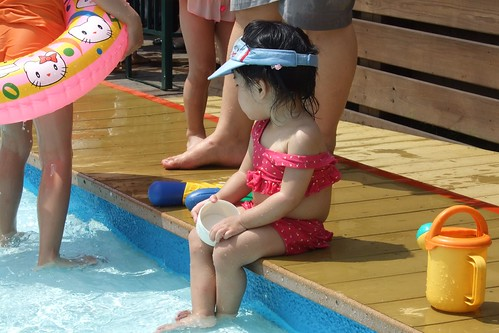
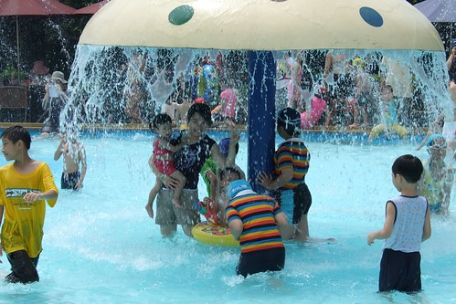

阿徹的生理時鐘似乎已經習慣三週回嘉義一次的週期
在台北過了兩個週末後就直嚷著下次放假要回去嘉義阿公家
想也知道是想要回去玩他的戲水池
可是媽媽這週日有攤 要去喝喜酒見見久未見面的前同事們
當我跟阿徹說”這禮拜不能回去嘉義 因為要去喝喜酒時”
阿徹的反應很大 眼淚霎那的奪框而出 說”我不要這樣子“娘對不住你 乖~ 不哭 禮拜六帶你玩水去嘿~
ㄟ
於是跟徹爸提議去自來水博物館走走
其實根據看過的一些照片 認知裡只以為水博館有像冬山河那樣的噴水池親水設備
所以當我從水博館外頭看到裡面的溜滑梯等設備時很surprised
進到裡面再看到這戲水池 真的只能說”這真是小孩戲水的天堂阿”
週六早上一樣一如平日的8點就被阿徹morning call叫起床
讓徹爸賴了一會床 吃完鮮奶早餐後 一家子九點出頭便出發前往
因為要跟太陽賽跑 必須趕在11-12點的烈日前回到家
九點半抵達水博館大門
哇塞大門口對面馬路旁竟然還有停車格 看來我們今天真的有來的早喔阿人怎麼這麼多啦~
買票時看到大門入口附近小貓才兩三隻 我跟徹爸更是竊喜”真是有早 沒啥人”
結果就在我們轉個彎要進到戲水池時才發現
天ㄚ
滿池的人不就九點開園就進來了 真是給他恐佈
不過講真的 日頭赤焰焰要趁早來 要不然即使水再涼人也會被曬成乾的
因為本來認知只是噴水設備 所以我心裡是打算讓小孩穿衣服玩水濕了再換衣服就好
幸好阿徹堅持的要帶他跟妹妹的泳裝來
也幸好我也很”備著總比沒有的好”的多帶了一套自己的衣服
所以今日我們母子女三人才得以盡興的戲水
而沒有多帶衣服還揹了個大攝影包的徹爸就負責在岸邊納涼 顧東西 照相嚕
這水的高度不超過我的膝蓋 阿徹的腰部
不小心跌倒了頂多吃了幾口水 嗆了一下 不用擔心溺斃危險問題
(媽) 孩子你去吧盡情的去玩吧
最邊邊的水深更是只到小愛的小腿肚
甚至小愛坐在池裡肚臍還會露出水面上
太陽大阿~還是給小愛戴個帽子遮陽一下
所謂一白遮三醜阿 尤其是女生 誰叫這年頭膚淺的男人這麼多
小愛愛玩水可是又有點小顧慮
所以大半的時間坐在池邊舀水 濺水

(愛)可是一個人坐在池邊挺無聊的哩

雖然空間也不是真的很大 人也有點多
但能在繁華的都市內這樣讓小孩子戲水已經很讓人振奮了

小愛不甘寂寞的再次挑戰

哇水深快到腰部了 小愛很勇敢喔
(阿徹好像穿著游泳圈牌的內褲喔)

下次可以帶坐式的游泳圈讓小愛漂浮
只是這樣阿爹阿娘要更辛苦的當船伕了

舒服 涼快~
這沒有海水的鹹味 也沒有游泳池的消毒味
是個裝了滿滿無臭無味自來水的大戲水池

帶著阿徹前進水母區 讓原本只濕下半身的阿母 從頭濕到腳了

眼睛不小心進水了 用媽媽的衣服擦一擦就好嚕
OHYA今日出擊成功
不過如果小朋友能多些同伴一起戲水一定會更好玩的
感謝~ 親家母剛好在戲水前一日的聚餐 拿了媳婦的這套泳衣要給小愛
雖然尺寸大小標示12M
雖然小愛的大肚南赤裸裸的被凸了出來
但泳裝版子很漂亮 花色也很清爽俏麗ㄋ
看的我跟徹爸口水直流 讚~